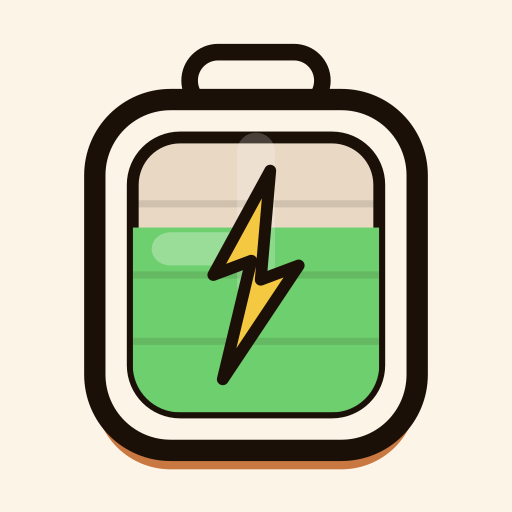

Breakflow
Pomodoro con IA que analiza tu tarea y te recomienda el ciclo de trabajo ideal. Minimalista, acogedor y sin distracciones.
Descargar en Google Play
Pomodoro con IA que analiza tu tarea y te recomienda el ciclo de trabajo ideal. Minimalista, acogedor y sin distracciones.
Descargar en Google PlayCaracterísticas
Describe tu tarea y la IA analiza qué ciclo Pomodoro te conviene más. Todo offline, sin enviar datos a ningún servidor.
Del clásico 25/5 a ciclos adaptados a sesiones largas, tareas creativas o estudio intensivo. Encuentra el ritmo que te hace fluir.
Interfaz cálida y minimalista con animaciones suaves que guían tu concentración sin interrumpirla. Solo tú y tu trabajo.